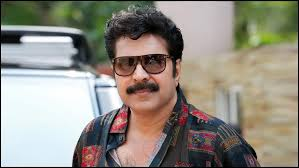
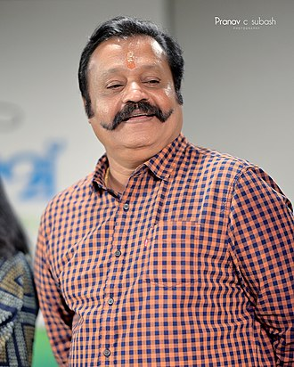

Mohanlal
Mohanlal Viswanathan Nair (born 21 May 1960), known mononymously as Mohanlal, is an Indian actor, film producer, playback singer, television host and film distributor who predominantly works in Malayalam cinema besides also having sporadically appeared in Tamil, Hindi, Telugu and Kannada-language films.[1][2][3] Mohanlal has a prolific career spanning over four decades, during which he has acted in more than 400 films.[2][4] Mohanlal's contributions to the Malayalam cinema have been praised by his contemporaries in the Indian film industry.[5][6][7] The Government of India honoured him with Padma Shri in 2001,[8] and Padma Bhushan in 2019, India's fourth and third highest civilian honours,[9] for his contributions to Indian cinema. In 2009, he became the first actor in India to be awarded the honorary rank of Lieutenant colonel in the Territorial Army.[10][11]
Suresh Gopi
Suresh Gopi (born 26 June 1958) is an Indian actor, politician, playback singer and television presenter. He works predominantly in Malayalam cinema and has also appeared in some Tamil, Telugu, Kannada and Bollywood films. Suresh made his acting debut as a child in the 1965 film Odayil Ninnu. He made his debut as an adult in 1986 and since then, he has acted in more than 250 films. Suresh Gopi is a recipient of the National Film Award and the Kerala State Film Award in 1998 for his performance in Kaliyattam. He was a nominated member of the Rajya Sabha, the upper house of the Parliament of India.[1]
mammootty
Muhammad Kutty Panaparambil Ismail (IPA: [muhammed̪ kutti pɐnɐpːɐrɐmbil ismɐjl]; born 7 September 1951), known mononymously by the hypocorism Mammootty (IPA: [mɐmːuːʈːi]), is an Indian actor and film producer who works predominantly in Malayalam films. He has also appeared in Tamil, Telugu, Kannada, Hindi, and English-language productions. In a career spanning five decades, he has acted in over 400 films. He is the recipient of several accolades, including three National Film Awards, seven Kerala State Film Awards, and thirteen Filmfare Awards South. For his contribution to film, the Government of India awarded him the Padma Shri in 1998.